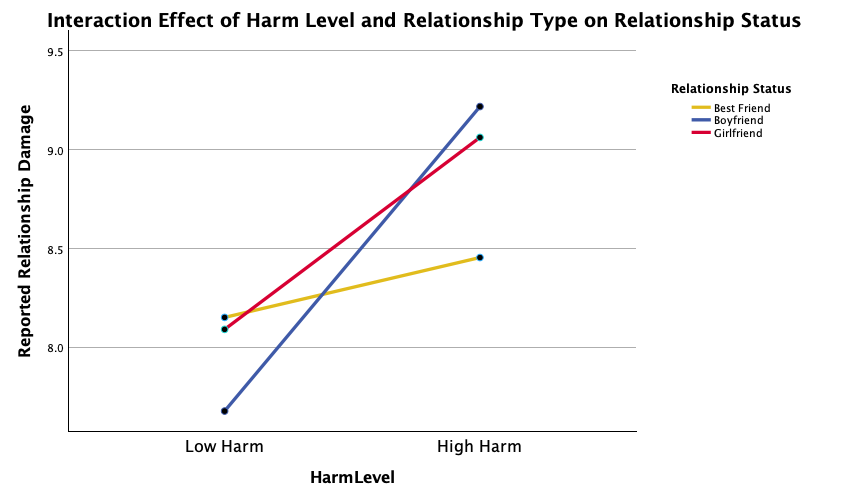
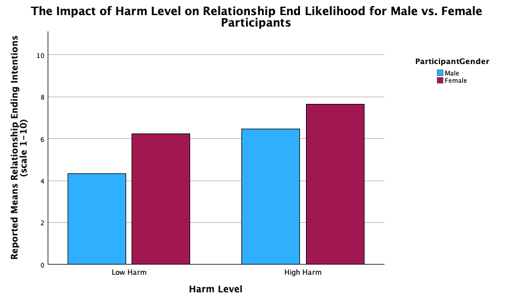

PSY-01
Dearly Beloved, You've Hurt Me
Background & Hypotheses
Forgiveness research has established that both dispositional traits (empathy, agreeableness) and situational factors (offense severity, apology quality) predict whether people forgive — but less is known about how relationship type and gender jointly shape that decision. This study examined how harm severity (low vs. high offense), relationship type (best friend, boyfriend, girlfriend), and participant/offender gender interact to predict relational outcomes.
Three hypotheses guided the study: (1) high-harm scenarios would produce lower forgiveness and leniency than low-harm ones; (2) participants would be less forgiving toward a best friend than a romantic partner in the high-harm condition; and (3) female participants would show less leniency than male participants overall.
Method
97 valid participants (194 data points; 40 male, 56 female — mostly 5C undergraduates, recruited via Sona Systems and social media) each read one randomly assigned low-harm scenario and one high-harm scenario, with the offender's relationship to them and gender independently randomized. The low-harm scenario depicted public social-media ridicule of a passion project; the high-harm scenario depicted a partner secretly breaking a shared apartment lease after the participant had paid their share of the deposit.
After each scenario, participants answered 8 questions covering immediate hurt, perceived relationship damage, immediate and long-term forgiveness, withdrawal tendency, felt responsibility, and intent to end the relationship.
Key Findings
- Harm level was the strongest main effect, significantly predicting nearly every outcome — most notably relationship damage (F = 15.970, p < .001) and likelihood of the relationship ending (F = 24.104, p < .001).
- Best friend relationships were unexpectedly resilient: there was no significant difference in reported damage between low- and high-harm offenses when the offender was a best friend — directly disproving the second hypothesis.
- Romantic relationships showed strong gender sensitivity. When the offender was a boyfriend, both genders reported significantly more damage in the high-harm condition. When the offender was a girlfriend, only male participants showed that sensitivity (Mdiff = 1.641, p = .020) — female participants showed no significant difference by harm level (p = .263).
- Female participants reported consistently higher intent to end the relationship across both harm levels, suggesting unforgiveness may function more as a protective stance than a graduated response to severity.

Fig. 1 — Harm level × relationship type on relationship damage

Fig. 2 — Harm level × gender on relationship-end intent
Discussion & Limitations
The results reframe forgiveness as context-dependent rather than a fixed trait: the same "high harm" offense was statistically indistinguishable from a "low harm" one when committed by a best friend, but sharply escalated damage in romantic relationships — and did so unevenly by gender depending on the offender's gender. That asymmetry (male participants penalizing a girlfriend for high harm; female participants not) is consistent with in-group empathy effects and the cultural framing of financial betrayal as less expected from women.
Limitations include a small, regionally concentrated sample (mostly 5C undergraduates), reliance on hypothetical rather than lived scenarios, and ambiguity in how participants placed themselves in same- vs. cross-gender relationship scenarios. Future work should replicate with a more demographically diverse sample and probe the surprising resilience of platonic friendships further.